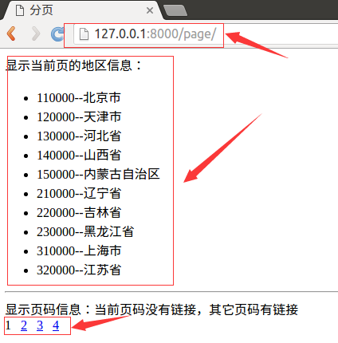
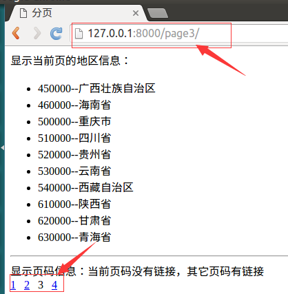

分页
Django提供了数据分页的类，这些类被定义在django/core/paginator.py中。 类Paginator用于对列进行一页n条数据的分页运算。类Page用于表示第m页的数据。
Paginator类实例对象
- 方法_init_(列表,int)：返回分页对象，第一个参数为列表数据，第二个参数为每页数据的条数。
- 属性count：返回对象总数。
- 属性num_pages：返回页面总数。
- 属性page_range：返回页码列表，从1开始，例如[1, 2, 3, 4]。
- 方法page(m)：返回Page类实例对象，表示第m页的数据，下标以1开始。
Page类实例对象
- 调用Paginator对象的page()方法返回Page对象，不需要手动构造。
- 属性object_list：返回当前页对象的列表。
- 属性number：返回当前是第几页，从1开始。
- 属性paginator：当前页对应的Paginator对象。
- 方法has_next()：如果有下一页返回True。
- 方法has_previous()：如果有上一页返回True。
- 方法len()：返回当前页面对象的个数。
示例
1）在booktest/views.py文件中创建视图page_test。
from django.core.paginator import Paginator
from booktest.models import AreaInfo
...
#参数pIndex表示：当前要显示的页码
def page_test(request,pIndex):
#查询所有的地区信息
list1 = AreaInfo.objects.filter(aParent__isnull=True)
#将地区信息按一页10条进行分页
p = Paginator(list1, 10)
#如果当前没有传递页码信息，则认为是第一页，这样写是为了请求第一页时可以不写页码
if pIndex == '':
pIndex = '1'
#通过url匹配的参数都是字符串类型，转换成int类型
pIndex = int(pIndex)
#获取第pIndex页的数据
list2 = p.page(pIndex)
#获取所有的页码信息
plist = p.page_range
#将当前页码、当前页的数据、页码信息传递到模板中
return render(request, 'booktest/page_test.html', {'list': list2, 'plist': plist, 'pIndex': pIndex})
2）在booktest/urls.py文件中配置url。
url(r'^page(?P<pIndex>[0-9]*)/$', views.page_test),
3）在templates/booktest/目录下创建page_test.html模板文件。
<html>
<head>
<title>分页</title>
</head>
<body>
显示当前页的地区信息：<br>
<ul>
{%for area in list%}
<li>{{area.id}}--{{area.atitle}}</li>
{%endfor%}
</ul>
<hr>
显示页码信息：当前页码没有链接，其它页码有链接<br>
{%for pindex in plist%}
{%if pIndex == pindex%}
{{pindex}}
{%else%}
<a href="/page{{pindex}}/">{{pindex}}</a>
{%endif%}
{%endfor%}
</body>
</html>
4）运行服务器，在浏览器中输入如下网址：
http://127.0.0.1:8000/page/

5）点击页码数字，效果如下图：
